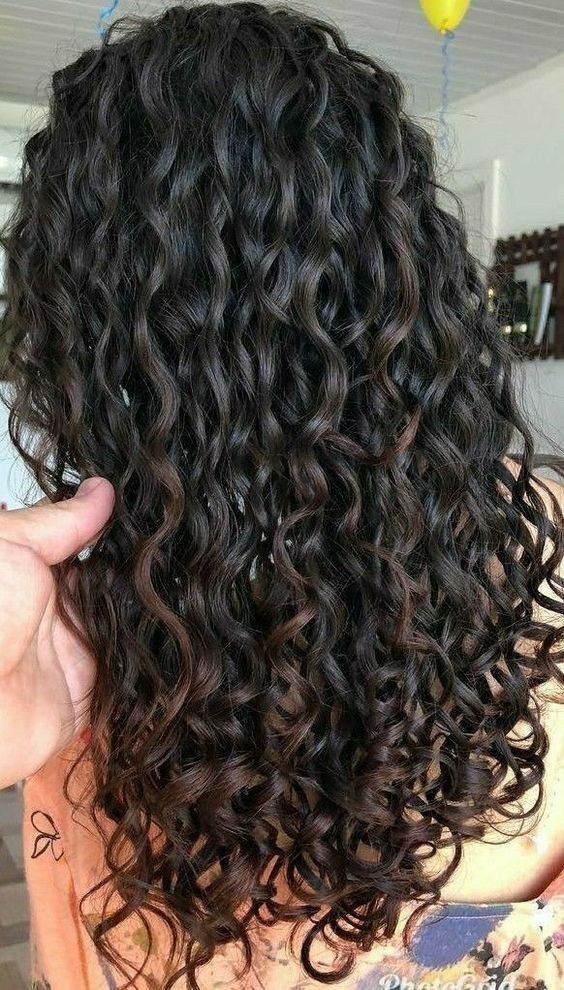

1 – Não lave os cachos todos os dias. ... 2 – Use produtos específicos. ... 3 – Seque os fios com tecido de algodão. ... 4 – Tenha um kit especial. ... 5 – Se alimente melhor. ... 6 – Faça o cronograma capilar. ... 7 – Umectação. ... 8 – Atenção ao pente.
As máscaras capilares, também conhecidas como cremes de tratamento, são indicadas para hidratar cabelos ressecados e quebradiços, restaurando sua saúde. Super práticas, podem ser usadas em casa, durante o banho e demoram apenas alguns minutos para agir. Quer saber quais são as melhores máscaras e produtos para cabelos quebradiços e ressecados? Veja a nossa seleção e o passo a passo de uma receita de hidratação super potente para fazer em casa. Confira!
Ideal para quem quer deixar o cabelo definido e garantir um bom day after. Para isso, com ele molhado e desembaraçado, divida em diversas mechas. Em seguida, passe o ativador de cachos ou creme de pentear, enluvando as mechas da raiz às pontas e separando-as como se fossem fitas. Ao chegar nas pontas, amasse-as com as mãos em direção a raiz para formar os cachos. Repita o processo por todo o cabelo e deixe secar naturalmente ou use o difusor.
Para quem quer ganhar definição nas partes com ou sem alisamento, o dedoliss consiste em enrolar os fios do cabelo com os dedos. Nos cabelos úmidos e desembaraçados, aplique creme para pentear e separe em mechas. Enrole-as da raiz até as pontas no próprio dedo. Segure por alguns instantes e solte. Faça o procedimento por todo o cabelo.